Digit Chain
Fold a long number to one digit. Add the first two digits; if the sum passes nine, add its digits again; keep going to the end.
Keypad 1 to 9. Levels grow from 3 digits to 16.
4533434 folds to 8
Four small games, each built from single digits. Digit Chain, Carry, Ladder and Balance ask for one digit at a time, so you never type a whole answer. You tap the next step, and the number folds into place.
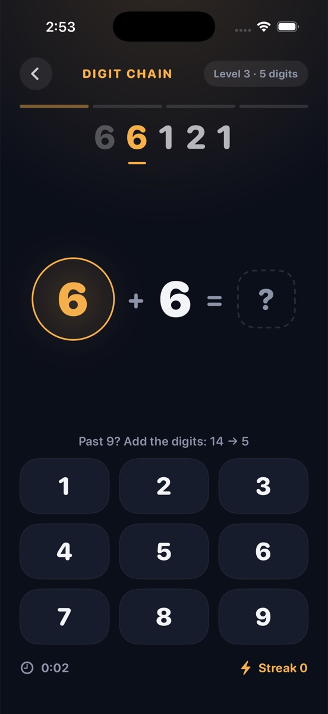
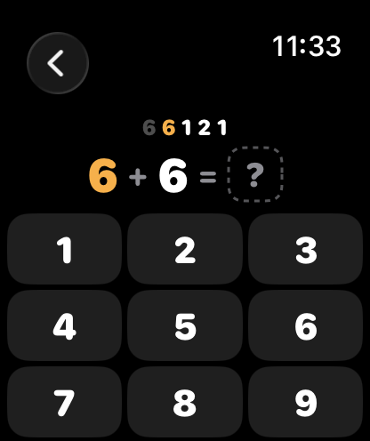
Each game has twelve practice levels, a Sprint, an Endless run and a daily puzzle. Start at level one; the numbers grow with you.
Fold a long number to one digit. Add the first two digits; if the sum passes nine, add its digits again; keep going to the end.
Keypad 1 to 9. Levels grow from 3 digits to 16.
4533434 folds to 8
Add the columns from the right. Tap the digit that goes in each column and keep the carry in your head.
Also take-away with borrows, and three-number sums. Up to six digits.
4787 + 2956: tap 3, 4, 7, 7 for 7743
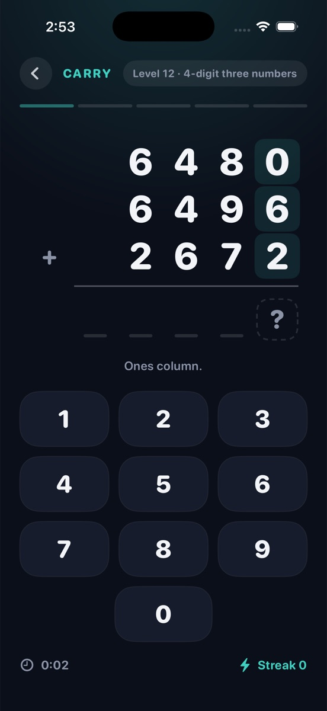
A start number, then one operation at a time. Each rung folds away as you go; hold the running total in your head.
At the top, pick where you landed from four answers. Up to 14 rungs.
17, +8, ×2, −14, ÷4, +6 lands on 15
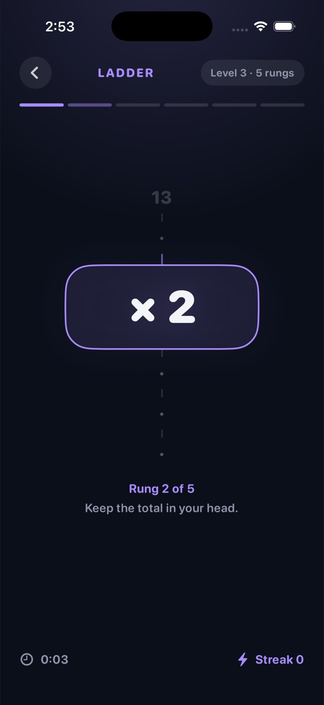
One digit is missing from the equation. Tap the digit that makes both sides equal, and the scale levels.
Later: brackets, two-digit numbers, times tables to twelve, and a 12-question marathon.
7 + ▢ = 15, so tap 8
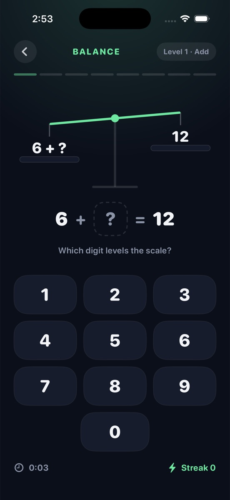
Here is Digit Chain with 4533434. Seven digits in, six taps, one digit out.
Every circle is one tap on the 1 to 9 keypad. When a sum passes nine, fold it: add its digits and carry on. The last tap folds the whole number to one digit.
7 + 6 = 13, tap 3. 8 + 5 + 1 = 14, tap 4. 7 + 9 + 1 = 17, tap 7. 4 + 2 + 1 = 7, tap 7. You wrote 7743 without ever seeing it written.
25, 50, 36, 9, 15. The rungs fold away as you go; at the top, pick 15 from four answers.
Which digit levels the scale? Tap 8. Later levels ask (4 + ▢) × 3 = 27, and the answer is still one digit.
Every game has all four. Stars, best times, points and the streak are kept on your device.
Twelve levels per game, three stars each, no clock. Clear a level to unlock the next.
Sixty seconds. As many steps as you can; the last five seconds tick.
Three lives, and it gets faster. A wrong tap costs a heart. How far can you go?
One puzzle per game each day, the same for everyone. Finish all four for a perfect-day star, and keep the daily streak alive with at least one.
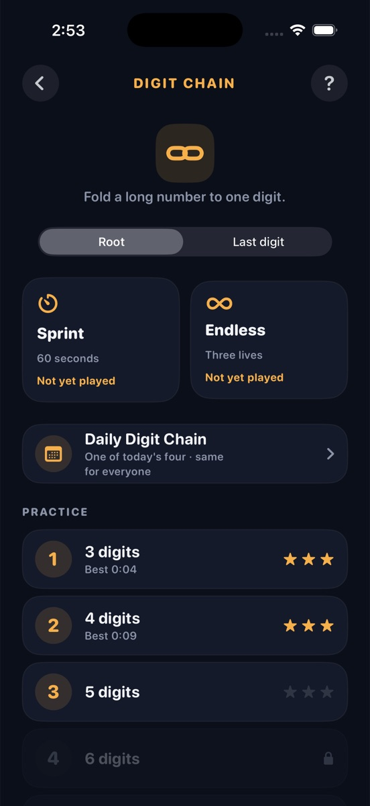
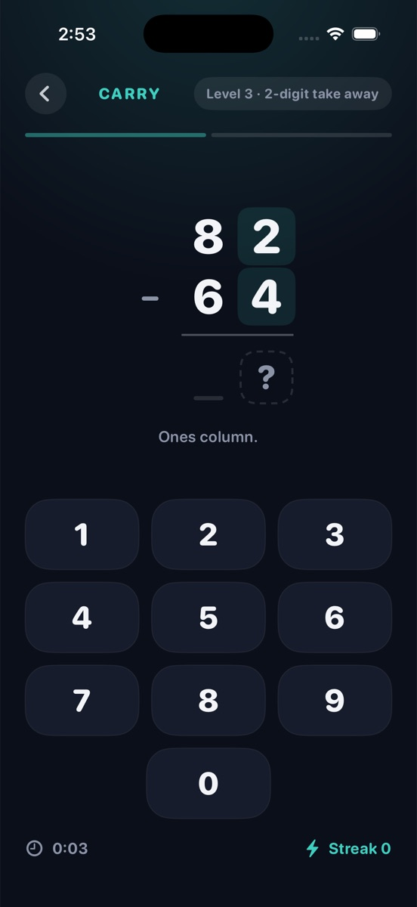
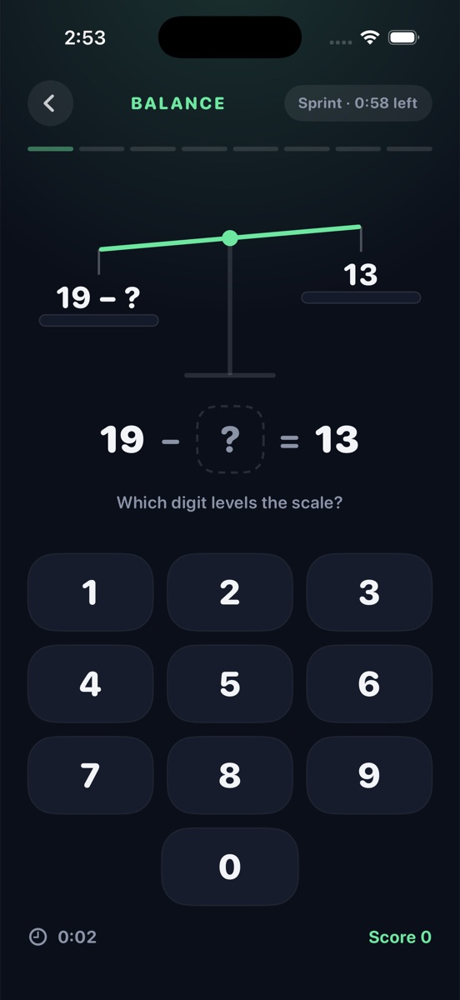
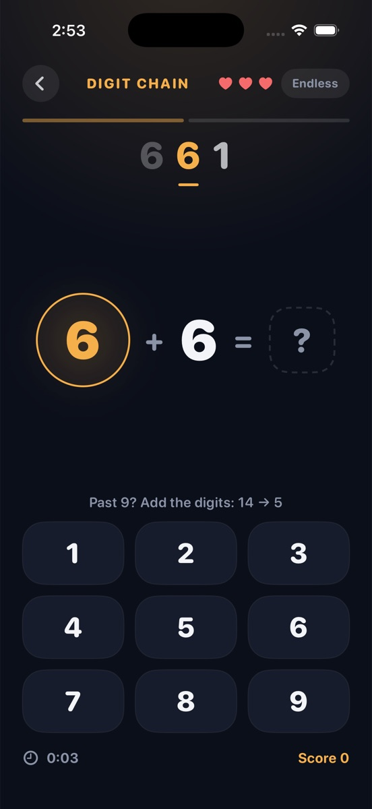
The watch app runs on its own, with short rounds and a keypad made for a thumb. On iPad, the board gets room to breathe.
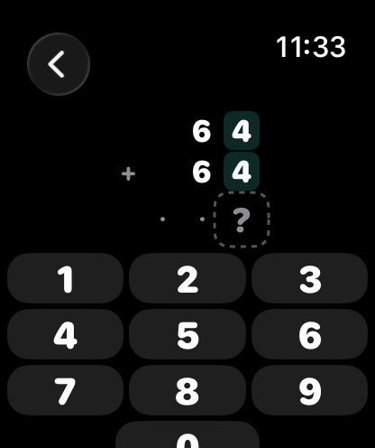
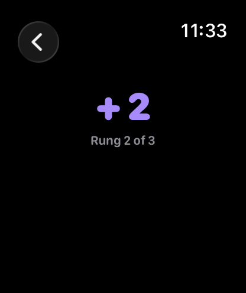
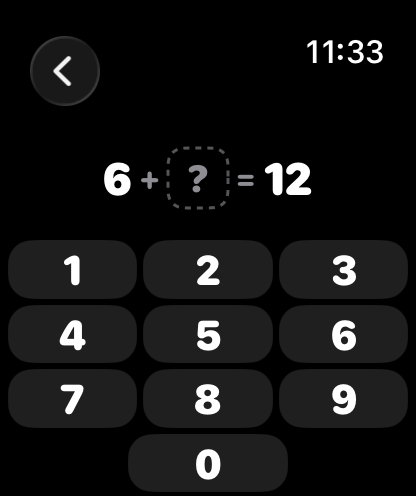
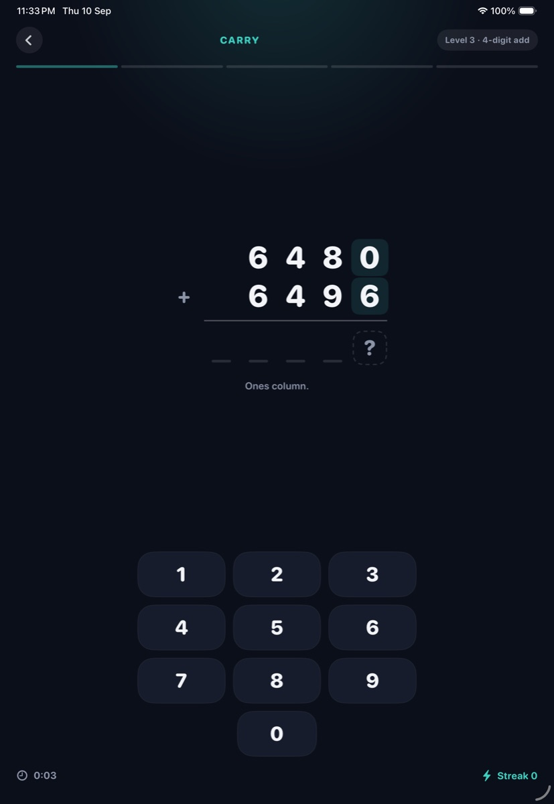
Every game, every level, every mode. Nothing is held back.
Nothing to watch, nothing to close, nothing to skip.
Open it and play. There is nothing to sign up for, and no tracking.
Progress is stored on your iPhone. Sync with iCloud, if you turn it on, goes through your own iCloud and nowhere else.
The App Store privacy label says “Data Not Collected”, because nothing is. Made for adults and kids alike, rated 4+. Requires iOS 26 or watchOS 26. Read the privacy policy.
Yes. Every game, every level and every mode, with no ads and no account. Download it and play.
Because every game folds a number down. A long number folds to one digit, columns fold into a sum, a ladder of operations folds into where you landed, and a scale folds level. Num, fold.
Each day the app builds one puzzle per game from the date, so everyone gets the same four. Finish all four for a perfect-day star. Play at least one and your daily streak grows; skip a whole day and it starts again from one.
Yes. It is rated 4+, with no accounts, no ads and no chat. Level one of every game uses small numbers, and the levels grow gently: a three-digit chain, a two-digit sum, three rungs, one missing digit.
No. The watch app runs on its own. With Sync with iCloud turned on, rounds on the watch count toward the same stars and streak as on your iPhone.
iOS 26 on iPhone or iPad. watchOS 26 on Apple Watch. More answers on the support page.
Free. No ads, no account. iPhone, iPad and Apple Watch.
Free on the App Store